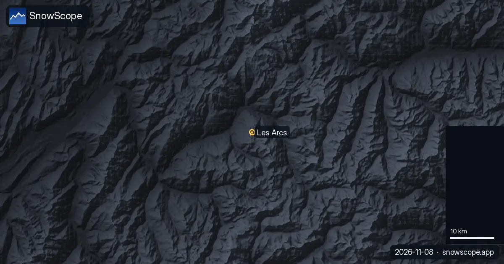
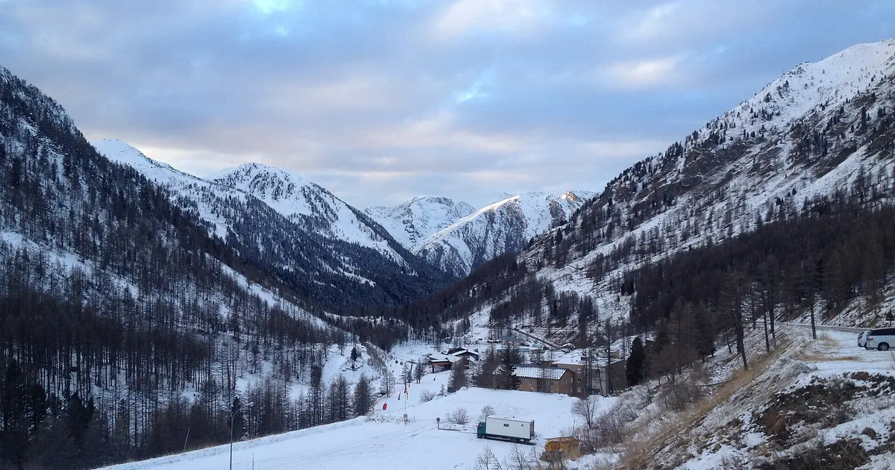

Les Arcs pueblo a pueblo: qué Arc elegir y dónde dura la nieve
Les Arcs no es una estación sino una familia de pueblos construidos en la misma montaña sobre Bourg-Saint-Maurice, cada uno con el nombre de su altitud aproximada. Elegir bien importa más de lo que parece: decide cuánto se camina hasta la nieve, cómo se llega y qué pistas se ven primero cada mañana.
Consulta la previsión de nieve en tiempo real de Les Arcs en la app SnowScopeEspesor de nieve, alertas de nieve polvo y mapa 3D, gratis.
Arc 1600: el pueblo del tren
El pueblo más antiguo abrió en 1968 y sigue siendo el más fácil de alcanzar sin coche: el funicular Arc en Ciel, instalado en 1986, sube desde la estación de Bourg-Saint-Maurice en unos 7 minutos. Para las familias que quieren el traslado más corto posible, eso solo puede decidir.

Arc 1800: el término medio
Arc 1800 abrió en 1974, el segundo de los pueblos, y va bien a los grupos que quieren la mitad de la montaña en la puerta. Su altitud queda entre nuestros puntos bajo y medio: la nieve suele ser fiable desde pleno invierno, pero las bajadas al pueblo son las primeras en sufrir tras un periodo templado.
Arc 1950 y Arc 2000: lo más cerca de la nieve alta
Arc 2000 abrió en 1979 y Arc 1950, un pueblo de residencias, se terminó en 2008. Están cerca de nuestro punto medio a 2.213 m, donde un invierno típico, en nuestro modelo de 46 inviernos pasados, tiene unos 68 cm de nieve en diciembre, 115 cm en enero, 150 cm en febrero y 160 cm en marzo, con un máximo habitual de unos 191 cm. A esa altura hay al menos 50 cm durante 21 semanas en 9 de cada 10 inviernos, frente a solo 2 semanas en nuestro punto más bajo, 1.222 m.
Estos pueblos también dan el acceso más rápido a la Aiguille Rouge, la cima del dominio a 3.250 m, y a la pista de esquí de velocidad usada en los Juegos Olímpicos de 1992. Cerca de lo alto de nuestra serie, a 3.205 m, el máximo habitual ronda los 379 cm y abril es el mes con más nieve, con unos 315 cm.
Paradiski: cuando una montaña no basta
Desde diciembre de 2003 el Vanoise Express une Les Arcs con Peisey-Vallandry y La Plagne. Juntos forman Paradiski, con unos 425 km de pistas y 160 remontes. Para una semana suelen bastar uno o dos días de forfait Paradiski; la travesía es lo mejor, y conviene mirar el viento antes de salir, porque los enlaces en altura pueden cerrar.
Cómo ha cambiado la nieve
Nuestra serie muestra menos nieve a media montaña que antes. En los primeros quince inviernos desde 1980-81 el máximo mediano a 2.213 m era de unos 212 cm; en los últimos quince, hasta 2025-26, de unos 182 cm, y los días con nieve en el suelo bajaron de unos 256 a 226. El invierno pasado fue bueno allí, con un máximo de unos 212 cm. La lección es sencilla: los pueblos más altos dan más margen en un año flojo.
¿Qué Arc para ti?
Arc 1600 si llegas en tren y te gustan las noches tranquilas, Arc 1800 para estar en medio de todo, Arc 1950 o Arc 2000 si lo que más importa es la nieve segura y la pendiente. En todo caso, comprueba los remontes en la web oficial antes de reservar y lee el boletín de aludes de Météo-France antes de cualquier día fuera de pista.
Consejos para esquiadores
- En tren: el funicular a Arc 1600 ahorra el traslado por carretera.
- Para la nieve más segura, alójate en Arc 1950 o Arc 2000, cerca de nuestro punto de media montaña.
- Guarda el día de Paradiski para un día tranquilo y despejado; los enlaces altos cierran con viento fuerte.
- Nieve en nuestro mapa no significa que una estación esté abierta: comprueba los remontes en la web oficial.
Referencias y créditos
- Wikipedia, 'Les Arcs', retrieved 8 November 2026: villages and opening years, Arc en Ciel funicular, Aiguille Rouge, speed skiing course. en.wikipedia.org/wiki/Les_Arcs
- Wikipedia, 'Paradiski', retrieved 8 November 2026: linked area, pistes and lifts, Vanoise Express. en.wikipedia.org/wiki/Paradiski
- Météo-France, mountain weather and avalanche risk bulletins (BERA) for the French massifs. meteofrance.com/meteo-montagne
Sobre estas cifras
Cifras de nieve: histórico de nieve de SnowScope, 46 inviernos pasados (1980-81 a 2025-26) a tres alturas de la estación, un modelo del pasado corregido por altitud (una estimación para una zona, no partes de la estación). Remontes, pistas y acceso: las fuentes de abajo, comprobadas en la fecha indicada.
Boletines oficiales de aludes: Météo-France BERA
Citar este informe
Para investigación, docencia o prensa: cifras y gráficos reutilizables libremente bajo CC BY 4.0 con esta cita.
SnowScope (2026), Les Arcs pueblo a pueblo: qué Arc elegir y dónde dura la nieve, https://snowscope.app/blog/es/2026/11/les-arcs-village-by-village-snow-paradiski.html, consultado el 2026-11-09
SnowScope (Atlas Labs). (2026, November 9). Les Arcs pueblo a pueblo: qué Arc elegir y dónde dura la nieve. SnowScope snow reports. https://snowscope.app/blog/es/2026/11/les-arcs-village-by-village-snow-paradiski.html
BibTeX
@misc{snowscope2026lesarcsvillagebyvillages,
author = {{SnowScope (Atlas Labs)}},
title = {Les Arcs pueblo a pueblo: qué Arc elegir y dónde dura la nieve},
year = {2026},
month = nov,
howpublished = {\url{https://snowscope.app/blog/es/2026/11/les-arcs-village-by-village-snow-paradiski.html}},
note = {Published 2026-11-09 18:59 UTC; accessed 2026-11-09}
}· CC BY 4.0 · Métodos, datos y herramientas →
Les Arcs: nieve y temperatura según la altura, este invierno vs el pasado (herramientas) →
Sigue Les Arcs
Gratis: un aviso cuando llega la nieve y la previsión cada mañana.
Más partes de nieve

La nieve de hoy en Grands Montets, la previsión estacional europea para diciembre y nuestro mapa de dónde diciembre parece más o menos nevado alrededor del Mont Blanc.

Isola 2000 recibió 62 cm de nieve nueva en las últimas 72 horas, 7 cm de ellos en las últimas 24 horas. Ahora tiene unos 19 cm en las pistas altas, …

Bonneval-sur-Arc (Francia) tiene hoy la nieve más profunda en los Alpes, con unos 52 cm en las pistas altas. Le siguen La Grave con 52 cm y Orelle …